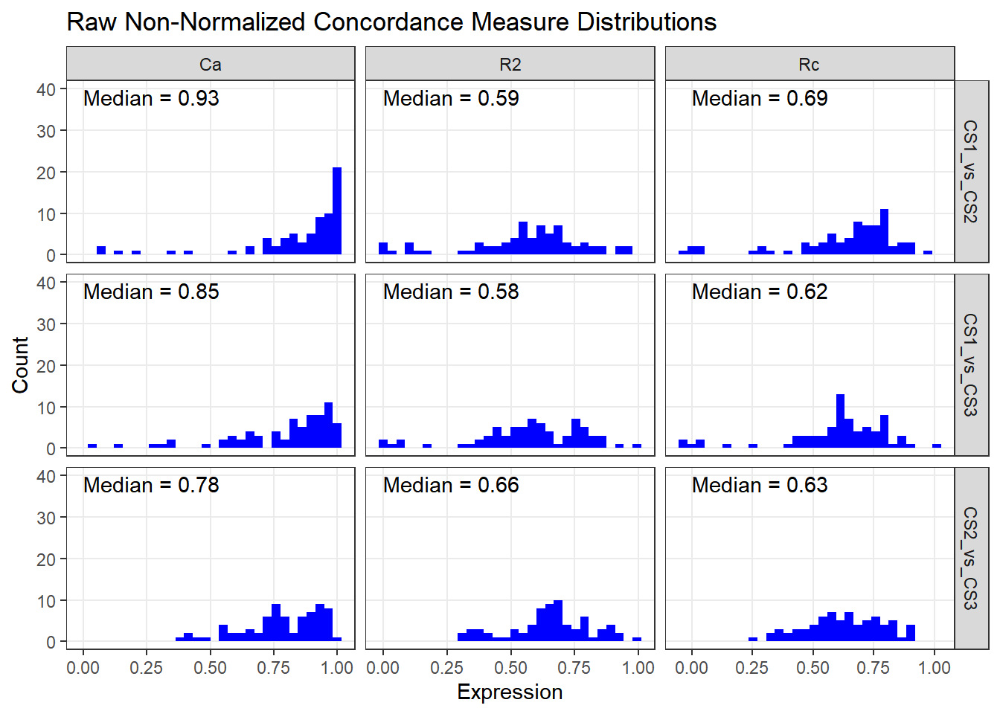
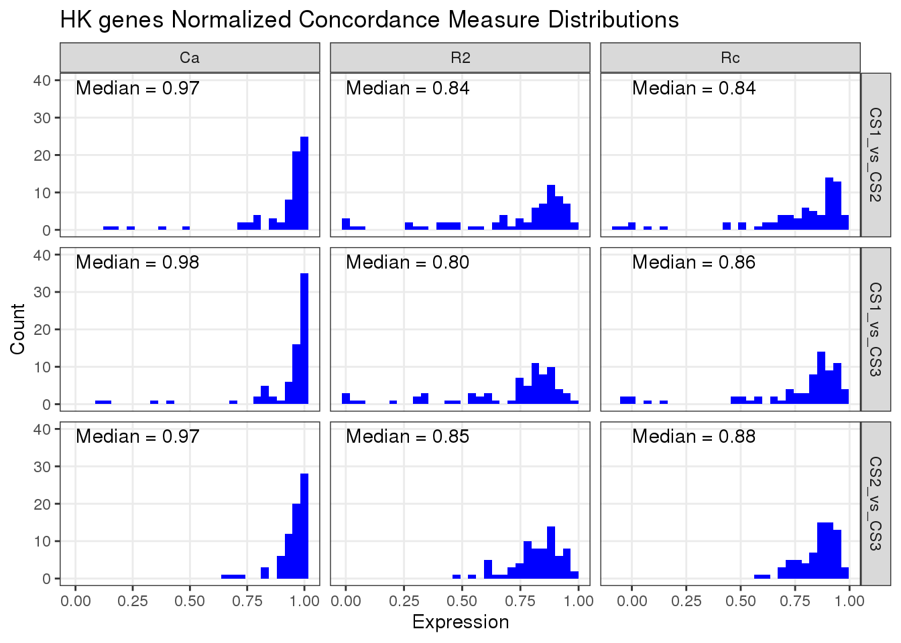
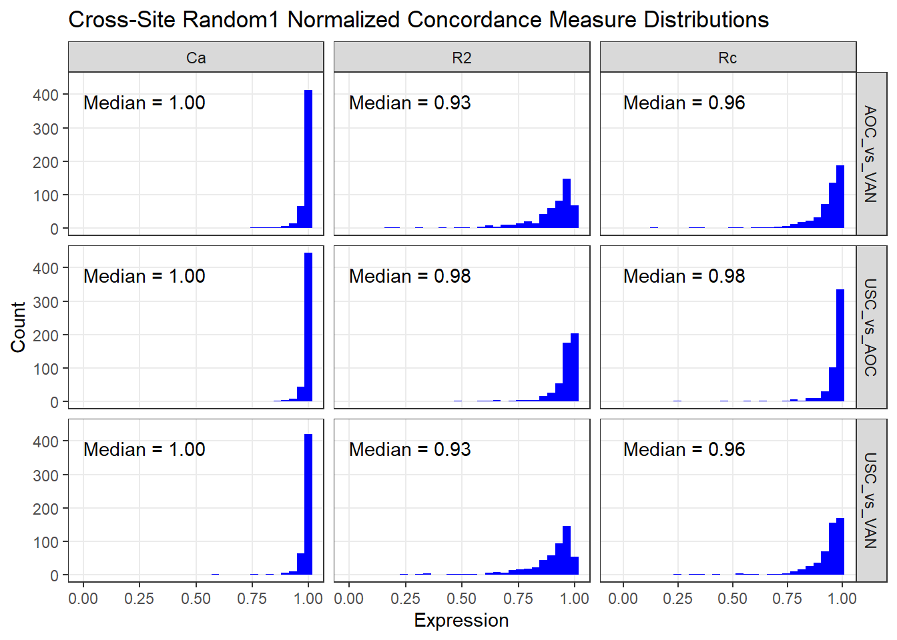

3 Validation
3.1 Full Data Distributions
The histotype distributions on the full data are shown below.
| hist_gr | CS1 | CS2 | CS3 |
|---|---|---|---|
| HGSC | 169 | 757 | 2453 |
| non-HGSC | 196 | 377 | 677 |
| revHist | CS1 | CS2 | CS3 |
|---|---|---|---|
| CARCINOMA-NOS | 0 | 61 | 23 |
| Carcinoma, NOS | 0 | 0 | 2 |
| CCOC | 57 | 68 | 182 |
| CCOC-MCT | 0 | 1 | 0 |
| Cell-Line | 17 | 48 | 13 |
| CTRL | 0 | 12 | 0 |
| ENOC | 61 | 30 | 272 |
| ENOC-CCOC | 0 | 7 | 0 |
| ERROR | 0 | 3 | 0 |
| HGSC | 169 | 757 | 2453 |
| HGSC-MCT | 0 | 1 | 0 |
| LGSC | 22 | 29 | 50 |
| MBOT | 0 | 20 | 3 |
| MET-NOP | 0 | 21 | 0 |
| MIXED (ENOC/CCOC) | 0 | 0 | 1 |
| MIXED (ENOC/LGSC) | 0 | 0 | 1 |
| MIXED (HGSC/CCOC) | 0 | 0 | 1 |
| mixed cell | 0 | 0 | 7 |
| MMMT | 0 | 0 | 30 |
| MUC | 20 | 61 | 77 |
| Other (use when 6, 7, or 9 is not distinguished) or unknown if epithelial | 0 | 0 | 1 |
| Other/Exclude | 0 | 0 | 8 |
| SBOT | 19 | 10 | 3 |
| Serous | 0 | 0 | 2 |
| serous LMP | 0 | 0 | 1 |
| SQAMOUS | 0 | 1 | 0 |
| UNK | 0 | 4 | 0 |
| revHist | CS1 | CS2 | CS3 |
|---|---|---|---|
| CCOC | 3 | 4 | 9 |
| Cell-Line | 4 | 5 | 5 |
| ENOC | 4 | 4 | 9 |
| HGSC | 68 | 64 | 98 |
| LGSC | 7 | 5 | 8 |
| MUC | 7 | 5 | 11 |
| revHist | CS1 | CS2 | CS3 | CS1_percent | CS2_percent | CS3_percent |
|---|---|---|---|---|---|---|
| CCOC | 57 | 68 | 182 | 17.3 | 7.2 | 6.0 |
| ENOC | 61 | 30 | 272 | 18.5 | 3.2 | 9.0 |
| HGSC | 169 | 757 | 2453 | 51.4 | 80.1 | 80.9 |
| LGSC | 22 | 29 | 50 | 6.7 | 3.1 | 1.6 |
| MUC | 20 | 61 | 77 | 6.1 | 6.5 | 2.5 |
| CodeSet | revHist | n |
|---|---|---|
| CS1 | CCOC | 57 |
| CS1 | Cell-Line | 17 |
| CS1 | ENOC | 61 |
| CS1 | HGSC | 169 |
| CS1 | LGSC | 22 |
| CS1 | MUC | 20 |
| CS1 | SBOT | 19 |
| CodeSet | revHist | n |
|---|---|---|
| CS2 | CARCINOMA-NOS | 61 |
| CS2 | CCOC | 68 |
| CS2 | CCOC-MCT | 1 |
| CS2 | Cell-Line | 48 |
| CS2 | CTRL | 12 |
| CS2 | ENOC | 30 |
| CS2 | ENOC-CCOC | 7 |
| CS2 | ERROR | 3 |
| CS2 | HGSC | 757 |
| CS2 | HGSC-MCT | 1 |
| CS2 | LGSC | 29 |
| CS2 | MBOT | 20 |
| CS2 | MET-NOP | 21 |
| CS2 | MUC | 61 |
| CS2 | SBOT | 10 |
| CS2 | SQAMOUS | 1 |
| CS2 | UNK | 4 |
| CodeSet | revHist | n |
|---|---|---|
| CS3 | CARCINOMA-NOS | 23 |
| CS3 | Carcinoma, NOS | 2 |
| CS3 | CCOC | 182 |
| CS3 | Cell-Line | 13 |
| CS3 | ENOC | 272 |
| CS3 | HGSC | 2453 |
| CS3 | LGSC | 50 |
| CS3 | MBOT | 3 |
| CS3 | MIXED (ENOC/CCOC) | 1 |
| CS3 | MIXED (ENOC/LGSC) | 1 |
| CS3 | MIXED (HGSC/CCOC) | 1 |
| CS3 | mixed cell | 7 |
| CS3 | MMMT | 30 |
| CS3 | MUC | 77 |
| CS3 | Other (use when 6, 7, or 9 is not distinguished) or unknown if epithelial | 1 |
| CS3 | Other/Exclude | 8 |
| CS3 | SBOT | 3 |
| CS3 | Serous | 2 |
| CS3 | serous LMP | 1 |
3.2 Training Set Distributions
The training set distributions for CS1 and CS2 are shown below.
| histotype | n |
|---|---|
| CCC | 57 |
| ENOCa | 59 |
| HGSC | 156 |
| LGSC | 16 |
| MUC | 16 |
| histotype | n |
|---|---|
| CCOC | 68 |
| ENOC | 30 |
| HGSC | 757 |
| LGSC | 29 |
| MUC | 61 |
3.3 Normalization


3.3.1 Common Samples Method
We employ a new normalization technique using randomly selected samples common to all three CodeSets with a uniform distribution of histotypes as the reference dataset. The number of randomly selected samples ranges from 1-3 per histotype. Hence, the reference dataset has either 5, 10, or 15 samples and we validate on the remaining. Note that ottaID duplicates are collapsed by mean averaging the gene expression. There are n=72 common samples.
CodeSets 1 and 2 are calibrated to CodeSet3 as follows:
X^1(norm) = X^1 - R^1 + R^3
X^2(norm) = X^2 - R^2 + R^3
X^3(norm) = X^3
3.3.1.1 Random3
Randomly choose 3 samples from each of the 5 histotypes as the reference set (n=15). The rest are validated.
Figure 3.1: Random3 Non-Normalized Concordance Measure Distributions
Figure 3.2: Random3 Normalized Concordance Measure Distributions
3.3.1.2 Random2
Randomly choose 2 samples from each of the 5 histotypes as the reference set (n=10). The rest are validated.
Figure 3.3: Random2 Non-Normalized Concordance Measure Distributions
Figure 3.4: Random2 Normalized Concordance Measure Distributions
3.3.1.3 Random1
Randomly choose 1 sample from each of the 5 histotypes as the reference set (n=5). The rest are validated.
Figure 3.5: Random1 Non-Normalized Concordance Measure Distributions
Figure 3.6: Random1 Normalized Concordance Measure Distributions
In Tables 3.10 and 3.11, we calculate the concordance measures for CS1 vs. CS3 and CS2 cs. CS3, respectively. The measures are calculated for both non-normalized and normalized datasets (CS1, CS2), and split by histotype.
| hist | R2-Non | Ca-Non | Rc-Non | R2-Norm | Ca-Norm | Rc-Norm |
|---|---|---|---|---|---|---|
| CCOC | 1.00 | 0.29 | 0.12 | 1.00 | 0.29 | 0.10 |
| ENOC | 1.00 | 0.54 | 0.54 | 1.00 | 0.62 | 0.62 |
| HGSC | 0.79 | 0.98 | 0.85 | 0.79 | 0.97 | 0.87 |
| LGSC | 0.96 | 0.89 | 0.82 | 0.96 | 0.91 | 0.87 |
| MUC | 0.77 | 0.86 | 0.68 | 0.77 | 0.81 | 0.63 |
| hist | R2-Non | Ca-Non | Rc-Non | R2-Norm | Ca-Norm | Rc-Norm |
|---|---|---|---|---|---|---|
| CCOC | 1.00 | 0.23 | 0.08 | 1.00 | 0.27 | 0.16 |
| ENOC | 1.00 | 0.63 | 0.61 | 1.00 | 0.61 | 0.57 |
| HGSC | 0.83 | 0.96 | 0.86 | 0.83 | 0.98 | 0.89 |
| LGSC | 0.98 | 0.92 | 0.90 | 0.98 | 0.95 | 0.93 |
| MUC | 0.68 | 0.77 | 0.55 | 0.68 | 0.86 | 0.61 |
3.3.1.4 Random3 HGSC
Randomly choose n=3 HGSC samples as the reference set, and use the rest as validation. This was tried in lieu of the fact that some non-HGSC histotypes have at most n=3 samples in total, so using Random3 or even Random2 would leave no samples remaining in the validation set for these histotypes.

Figure 3.7: Random3 HGSC Normalized Concordance Measure Distributions
In Tables 3.12 and 3.13, we calculate the concordance measures for CS1 vs. CS3 and CS2 cs. CS3, respectively. The measures are calculated for both non-normalized and normalized datasets (CS1, CS2), and split by histotype.
| hist | R2-Non | Ca-Non | Rc-Non | R2-Norm | Ca-Norm | Rc-Norm |
|---|---|---|---|---|---|---|
| CCOC | 0.62 | 0.62 | 0.32 | 0.62 | 0.68 | 0.27 |
| ENOC | 0.88 | 0.76 | 0.66 | 0.88 | 0.77 | 0.70 |
| HGSC | 0.77 | 0.97 | 0.85 | 0.77 | 0.99 | 0.87 |
| LGSC | 0.94 | 0.85 | 0.80 | 0.94 | 0.90 | 0.84 |
| MUC | 0.74 | 0.92 | 0.72 | 0.74 | 0.93 | 0.78 |
| hist | R2-Non | Ca-Non | Rc-Non | R2-Norm | Ca-Norm | Rc-Norm |
|---|---|---|---|---|---|---|
| CCOC | 0.66 | 0.56 | 0.35 | 0.66 | 0.59 | 0.42 |
| ENOC | 0.85 | 0.76 | 0.66 | 0.85 | 0.85 | 0.76 |
| HGSC | 0.82 | 0.96 | 0.86 | 0.82 | 0.99 | 0.90 |
| LGSC | 0.97 | 0.95 | 0.92 | 0.97 | 0.92 | 0.90 |
| MUC | 0.74 | 0.89 | 0.72 | 0.74 | 0.93 | 0.72 |
3.3.1.5 Random1 for Sites
We use the Random1 method to normalize CS3-USC and CS3-AOC to CS3-VAN. There aren’t enough samples in the USC and AOC cohorts to perform Random2 or Random3.
Figure 3.8: Cross-Site Random1 Non-Normalized Concordance Measure Distributions

3.3.2 Pools Method
3.3.2.1 CS2 vs. CS3
CodeSet2 contains 12 ref pool samples (Pool 1 = 4, Pool 2 = 4, Pool 3 = 4). CodeSet3 contains 22 ref pool samples (Pool 1 = 12, Pool 2 = 5, Pool 3 = 5). n=84 common samples.
CodeSet2 is calibrated to CodeSet3 as follows:
X^2(norm) = X^2 - R^2 + R^3
X^3(norm) = X^3

Figure 3.9: CS2Non vs. CS2Pools Concordance Measure Distributions
Figure 3.10: CS2 Non-Normalized Pools vs. CS3 Concordance Measure Distributions
Figure 3.11: CS2 Normalized Pools vs. CS3 Concordance Measure Distributions
| hist | R2 | Ca | Rc |
|---|---|---|---|
| CCOC | 0.66 | 0.53 | 0.26 |
| ENOC | 0.88 | 0.74 | 0.63 |
| HGSC | 0.77 | 0.94 | 0.80 |
| LGSC | 0.98 | 0.95 | 0.92 |
| MUC | 0.74 | 0.86 | 0.68 |
| hist | R2 | Ca | Rc |
|---|---|---|---|
| CCOC | 0.66 | 0.60 | 0.32 |
| ENOC | 0.88 | 0.76 | 0.68 |
| HGSC | 0.77 | 0.94 | 0.81 |
| LGSC | 0.98 | 0.95 | 0.93 |
| MUC | 0.74 | 0.91 | 0.71 |
3.3.2.2 USC vs. VAN
In CodeSet 3, we normalize the USC and AOC cohorts to the VAN cohort which is used as the reference dataset.
Figure 3.12: USC-Non vs. USC-Pools Concordance Measure Distributions
Figure 3.13: USC-Non vs. VAN-Non Concordance Measure Distributions
Figure 3.14: USC-Pools vs. VAN-Non Concordance Measure Distributions
Figure 3.15: USC vs. VAN Comparisons of Concordance Measure Distributions
3.3.2.3 AOC vs. VAN
Figure 3.16: AOC-Non vs. AOC-Pools Concordance Measure Distributions

Figure 3.17: AOC-Non vs. VAN-Non Concordance Measure Distributions
Figure 3.18: AOC-Pools vs. VAN-Non Concordance Measure Distributions
Figure 3.19: AOC vs. VAN Comparisons of Concordance Measure Distributions
3.3.3 Common Samples vs. Pools Comparison
Since only CS2 and CS3 have pools, we make three comparisons between these two CodeSets:
- Non-Normalized
- Common Samples Method
- Pools Method
Figure 3.20: Random3 Samples Comparisons of Concordance Measure Distributions
| hist | R2-Non | Ca-Non | Rc-Non | R2-Common | Ca-Common | Rc-Common | R2-Pools | Ca-Pools | Rc-Pools |
|---|---|---|---|---|---|---|---|---|---|
| HGSC | 0.84 | 0.96 | 0.86 | 0.84 | 0.99 | 0.90 | 0.84 | 0.96 | 0.86 |
| LGSC | NA | NA | NA | NA | NA | NA | NA | NA | NA |
| MUC | 1.00 | 0.49 | 0.44 | 1.00 | 0.62 | 0.52 | 1.00 | 0.46 | 0.42 |
Figure 3.21: Random2 Samples Comparisons of Concordance Measure Distributions
| hist | R2-Non | Ca-Non | Rc-Non | R2-Common | Ca-Common | Rc-Common | R2-Pools | Ca-Pools | Rc-Pools |
|---|---|---|---|---|---|---|---|---|---|
| CCOC | NA | NA | NA | NA | NA | NA | NA | NA | NA |
| ENOC | NA | NA | NA | NA | NA | NA | NA | NA | NA |
| HGSC | 0.84 | 0.96 | 0.87 | 0.84 | 0.98 | 0.89 | 0.84 | 0.96 | 0.86 |
| LGSC | 1.00 | 0.88 | 0.87 | 1.00 | 0.88 | 0.88 | 1.00 | 0.85 | 0.85 |
| MUC | 0.97 | 0.95 | 0.91 | 0.97 | 0.94 | 0.90 | 0.97 | 0.96 | 0.92 |
Figure 3.22: Random1 Samples Comparisons of Concordance Measure Distributions
| hist | R2-Non | Ca-Non | Rc-Non | R2-Common | Ca-Common | Rc-Common | R2-Pools | Ca-Pools | Rc-Pools |
|---|---|---|---|---|---|---|---|---|---|
| CCOC | 1.00 | 0.23 | 0.08 | 1.00 | 0.27 | 0.16 | 1.00 | 0.15 | 0.09 |
| ENOC | 1.00 | 0.63 | 0.61 | 1.00 | 0.61 | 0.57 | 1.00 | 0.61 | 0.61 |
| HGSC | 0.83 | 0.96 | 0.86 | 0.83 | 0.98 | 0.89 | 0.83 | 0.96 | 0.86 |
| LGSC | 0.98 | 0.92 | 0.90 | 0.98 | 0.95 | 0.93 | 0.98 | 0.92 | 0.90 |
| MUC | 0.68 | 0.77 | 0.55 | 0.68 | 0.86 | 0.61 | 0.68 | 0.78 | 0.51 |
3.3.4 CodeSet Chaining
Figure 3.23: Random1 Concordance Measure Distributions
Figure 3.24: Random1 + Pools Concordance Measure Distributions
Figure 3.25: CS1 CodeSet Chaining Concordance Measure Distributions
Figure 3.26: CS2 CodeSet Chaining Concordance Measure Distributions
3.4 Common Sample Distributions
| revHist | CS1 | CS2 | CS3 |
|---|---|---|---|
| CCOC | 3 | 4 | 3 |
| ENOC | 4 | 4 | 3 |
| HGSC | 59 | 62 | 75 |
| LGSC | 7 | 5 | 4 |
| MUC | 7 | 5 | 5 |
| revHist | CS1 | CS2 | CS3 |
|---|---|---|---|
| CCOC | 3 | 3 | 3 |
| ENOC | 3 | 3 | 3 |
| HGSC | 57 | 57 | 57 |
| LGSC | 4 | 4 | 4 |
| MUC | 5 | 5 | 5 |
| revHist | CS2 | CS3 |
|---|---|---|
| CCOC | 3 | 3 |
| ENOC | 3 | 3 |
| HGSC | 71 | 71 |
| LGSC | 4 | 4 |
| MUC | 5 | 5 |
| revHist | AOC | USC | Vancouver |
|---|---|---|---|
| CCOC | 3 | 3 | 3 |
| ENOC | 3 | 3 | 3 |
| HGSC | 13 | 13 | 27 |
| LGSC | 2 | 2 | 2 |
| MUC | 3 | 3 | 3 |
| revHist | AOC | USC | Vancouver |
|---|---|---|---|
| CCOC | 3 | 3 | 3 |
| ENOC | 3 | 3 | 3 |
| HGSC | 13 | 13 | 13 |
| LGSC | 2 | 2 | 2 |
| MUC | 3 | 3 | 3 |